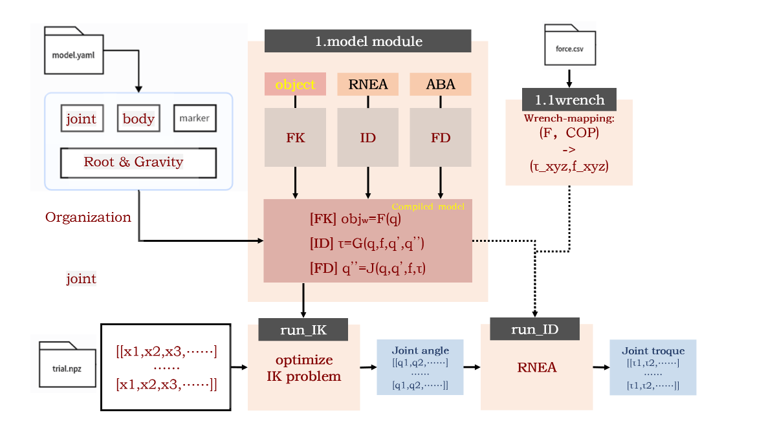
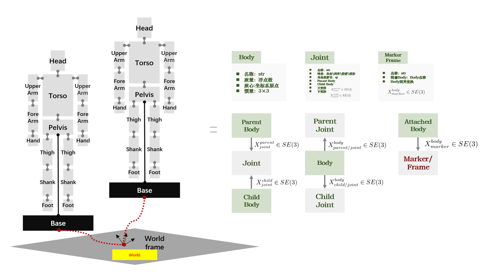
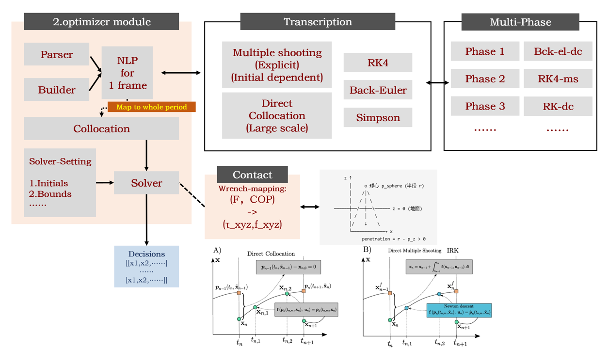
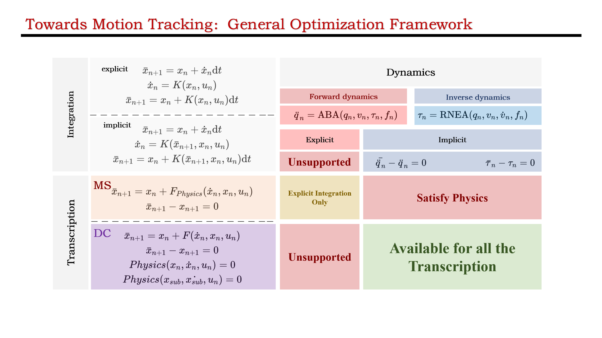
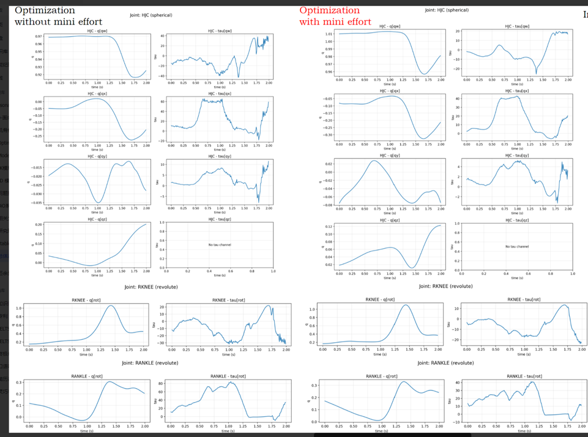

Inverse Kinematics
Track marker trajectories and estimate generalized coordinates.
Current Work
A modular trajectory optimization framework for musculoskeletal control. The current implementation covers model compilation, rigid-body model definition, problem transcription, multi-phase construction, contact wrench mapping, inverse kinematics, inverse dynamics, and GRF tracking.
The framework compiles a YAML-defined musculoskeletal rigid-body model into reusable kinematic and dynamic functions. Motion trajectories and contact force inputs are then mapped into inverse kinematics and inverse dynamics problems.

The rigid-body model is represented through bodies, joints, and marker frames. Body definitions include mass properties, while joints define parent-child transformations. Marker frames are attached to body segments for motion tracking, and the floating base connects the model to the world frame.

The optimizer module separates parsing, problem building, transcription, and solving. A one-frame nonlinear programming problem is mapped to the full motion period through collocation or multiple shooting, with support for multi-phase tasks and contact wrench constraints.

The framework distinguishes integration schemes, transcription methods, and dynamics formulations. This design allows forward dynamics and inverse dynamics constraints to be combined with multiple shooting or direct collocation while maintaining physics consistency.

Track marker trajectories and estimate generalized coordinates.
Use RNEA with joint states and mapped contact wrenches to estimate joint torques.
Track experimental ground reaction forces with optimized contact forces.
Combine different transcription and integration schemes across movement phases.
The current framework has been tested on motion trajectory input, joint torque optimization, and ground reaction force tracking. The optimized contact forces broadly follow experimental GRF profiles across vertical, anterior-posterior, and medial-lateral directions.


